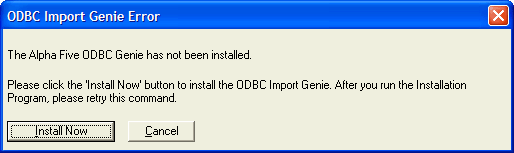

Importing Data Into Alpha Five
Note: If you are using Web components or SQL APIs, you don't need to import SQL data into Alpha Five at all: you can run SQL queries directly against the database.
There are several techniques for importing data into Alpha Five.
Attaching a .DBF table. Many other programs, including Microsoft Excel and Microsoft Access can save data in .DBF format. If data from a another program is available in .DBF format, you need only attach it as a new table. Field names are limited to a maximum length of 10 characters.
Make sure that character field lengths in the source table are the same as the fields in the target table. Microsoft Access text fields are often 255 characters long.
Importing data saved in one of the common Lotus 1-2-3, Microsoft Excel, or ASCII formats.
Using ODBC
ODBC (Open Database Connectivity) is a programming standard for accessing information from a variety of database systems. Alpha Five lets you use ODBC to interact with other data sources.
Alpha Five uses ODBC in two ways.
Attach an SQL table to a Alpha Five database, creating a Linking Table.
Use the ODBC Import Genie to import data into an Alpha Five table, letting you use the data in an Alpha Five environment.
The Alpha Five ODBC Import Genie lets you import ODBC data into an Alpha Five table. Once imported, the table behaves like any other Alpha Five table. Note that once the imported into Alpha Five, any changes you make to the data is not reflected in the original source data.
To use the ODBC Import Genie :
In the Control Panel, select File > Import > ODBC Import Genie.
The Genie either opens, or you are prompted to install the ODBC Import Genie.
Installing the ODBC Import Genie

If you are prompted to install the ODBC Import Genie, you can install it immediately by clicking the Install Now button.
If you installed Alpha Five Version 5 from a CD, installation begins and asks you to insert your Alpha Five CD.
If you installed Alpha Five Version 5 from the Web, Alpha Five opens your web browser and initiates the installer. You'll need an active Internet connection to do this.
When the installation is complete, open the ODBC Import Genie again, and the Genie guides you through the import process.
Click Next >.
The ODBC Import Genie lets you import data into Alpha Five tables from the following sources:
Microsoft Access
Microsoft Foxpro (versions above 2.6 - you do no need to import Foxpro tables from v2.6 or earlier - just use them as is)
Microsoft Excel
Paradox
Microsoft Outlook and Microsoft Exchange
Any ODBC data source
 Note : The ODBC Import Genie converts Microsoft
Access and Microsoft Excel Date/Time
fields into Alpha Five Date fields. To preserve
time values, first convert them into character representations of date/time
or time values. After importing the data into Alpha Five, use an Update
operation to convert the character data into a Alpha Five Time (date and
time data) or Short Time (time only) value.
Note : The ODBC Import Genie converts Microsoft
Access and Microsoft Excel Date/Time
fields into Alpha Five Date fields. To preserve
time values, first convert them into character representations of date/time
or time values. After importing the data into Alpha Five, use an Update
operation to convert the character data into a Alpha Five Time (date and
time data) or Short Time (time only) value.
 Note : The ODBC Import Genie truncates Microsoft
Excel field names to 10 characters.
Note : The ODBC Import Genie truncates Microsoft
Excel field names to 10 characters.
When you choose to import tables from a database that contains multiple tables (such as a Microsoft Access database, or a Microsoft SQL Server database), you can instruct Alpha Five to import all of the tables in the database at once. This lets you convert an entire Access database to Alpha Five in just a few mouse clicks.
The first page of the Genie lets you select the type of data you want to import. Select a database type.
Click Browse... to find the database you want to import.
Specify which table(s) to import.
Click Next >.

The next page of the Genie lets you enter any arbitrary SQL statement to select the data that you want to import. The statement can filter the table to be imported, or sub-select which fields you want to import.
Optionally, preview which records will be imported by clicking the Refresh Query button.
Click Next >.

Optionally click the Show Xbasic button. This shows the Xbasic code that you can include in a script to automate the importing of data from any of the data sources that the ODBC Import Genie supports.
Click Finish.